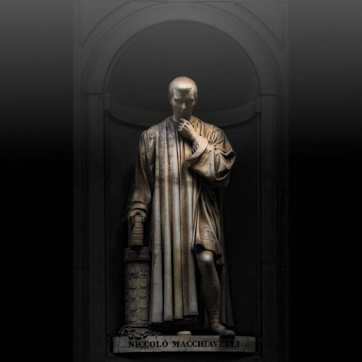

Born: 1469, Florence
Childhood: Born into a noble but modest family in Florence. He received a humanist education that exposed him early to classical history and political thought.
Homeplace: lorence was a powerful and culturally rich city during the Renaissance. Its political struggles and vibrant intellectual life strongly influenced Machiavelli’s thinking.
Brief History Niccolò Machiavelli (1469–1527) was an Italian diplomat, philosopher, and writer, widely regarded as the father of modern political science. He is best known for his political treatise The Prince, which explores how rulers can gain and maintain power. He was born on May 3, 1469, in Florence, Italy, into a middle-class family with noble roots. His father was a lawyer with a personal library, which gave young Machiavelli early access to classical literature and ideas. In 1498, after the powerful Medici family was exiled, Machiavelli was appointed as a diplomat and secretary for the Florentine Republic. During his time in office, he traveled to the courts of France, Germany, and the Papal States. He studied different political systems and rulers—especially Cesare Borgia, who inspired many of the ideas in The Prince. Machiavelli also helped organize Florence’s citizen army. However, in 1512, the Medici family returned to power. Machiavelli was removed from office, falsely accused of conspiracy, and tortured before being released. Banished from politics, he retreated to his estate and began writing. In 1513, he wrote The Prince, a short but powerful book offering blunt advice to rulers. Its central message—that it is safer for a ruler to be feared than loved—challenged traditional moral thinking and made his name synonymous with cunning, pragmatic politics. He also wrote Discourses on Livy, The Art of War, and The Mandrake, showcasing his interest in republics, military theory, and satire. Machiavelli died on June 21, 1527, just weeks after the Medici were overthrown once again. Though he never returned to political power, his writings lived on. Today, Machiavelli is remembered as a realist who examined politics as they are, not as people wish them to be. His work remains essential reading for understanding power, leadership, and statecraft.